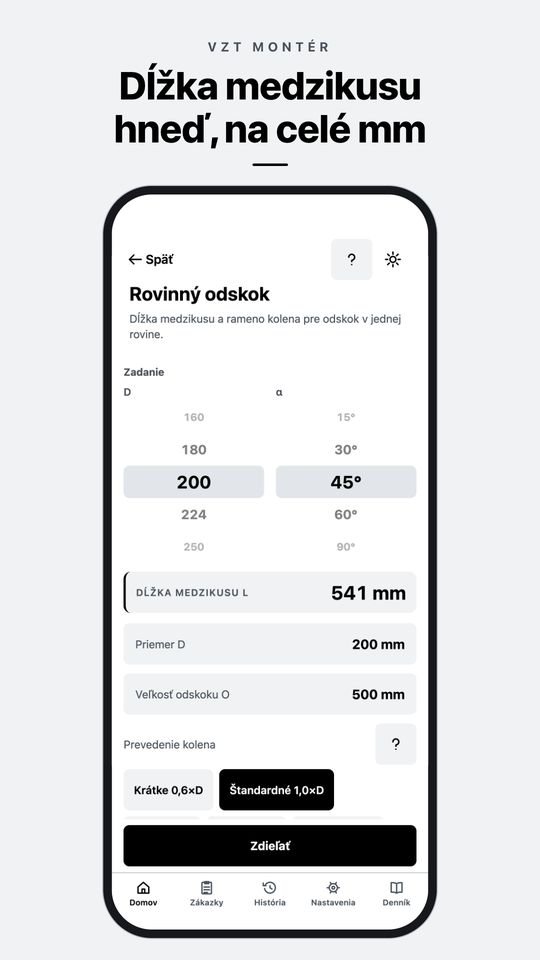
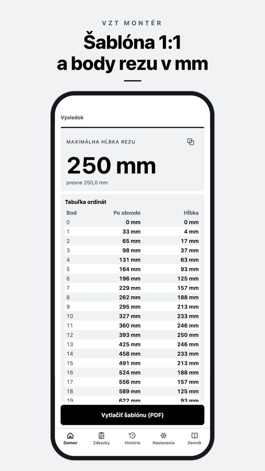
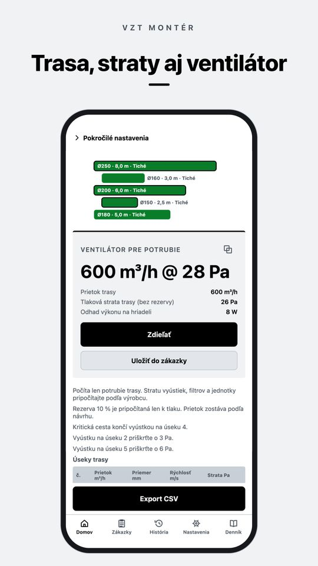
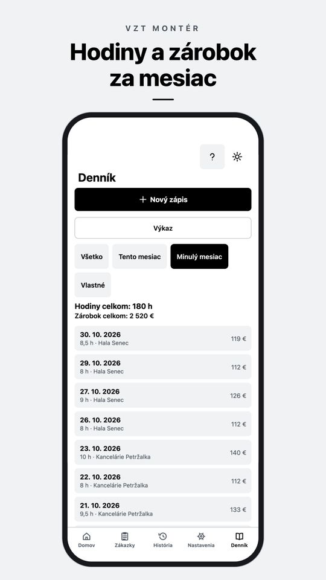

Aplikácia pre iPhone a Android
Odskok, rozvinutie kolena a prietok vzduchu spočítate priamo na stavbe
VZT Montér je kalkulačka pre montérov vzduchotechniky. Zadáte, čo nameriate metrom, a dostanete dĺžku medzikusu, šablónu rozvinutia plechu 1:1 alebo tlakovú stratu trasy. Funguje offline a bez účtu.
Stiahnutie zadarmo. PRO je jednorazový nákup, žiadne predplatné.

Kalkulačky pre vzduchotechniku online
Štyri výpočty z aplikácie VZT Montér, zadarmo v prehliadači. Počítajú rovnakými vzorcami ako aplikácia. Desatinné čísla môžete písať s čiarkou.
Čo VZT Montér vie
Všetko beží v telefóne, bez internetu a bez účtu. Výpočty sa dajú uložiť do histórie alebo k zákazke.
Odskoky Zadarmo PRO
Rovinný odskok na Spiro a odskok štvorhranného kanála pre rádiusové, lomené aj lomené kolená s lopatkami sú zadarmo. Priestorový odskok, odskok okolo prekážky a vlastný uhol kolien v PRO.
Zarezanie a rozvinutie PRO
Šikmý rez, segmentové koleno, odbočka (sedlo), prechod kruh na štvorhran a kužeľová redukcia. Body rezu v tabuľke na celé mm a PDF šablóna 1:1 na listy A4 s kontrolnou úsečkou 100 mm.
Prepočty Zadarmo
Kruh na štvorhran, prietok, rýchlosť a priemer, najbližší rozmer Spiro a EN 1505, potrebný prietok vzduchu pre miestnosť a náhrada prierezu.
Návrh trasy a straty PRO
Úseky s odbočkami, dimenzovanie, tlaková strata, kritická cesta, priškrtenie pri každej vyústke, ventilátor a výkaz materiálu.
Rýchla kontrola úseku PRO
Jeden úsek, hneď výsledok: strata trením a tvarovkami, ventilátor, rosný bod a riziko kondenzácie.
Zákazky, ponuka a denník Zadarmo PRO
Výpočty k zákazke a PDF protokol, denník hodín so zárobkom za mesiac. Zadarmo 3 zákazky a 14 dní denníka. V PRO bez obmedzenia, s fotkami zo stavby, PDF výkazom hodín a ponukou z cenníka.
Tabuľky Zadarmo
Rady Spiro a štvorhranných kanálov, súčinitele miestnych odporov, drsnosti, polomery kolien a odporúčané rýchlosti.
Do terénu
Denný režim je čiernobiely, aby bol vidieť na slnku, nočný režim do strojovne. Veľké tlačidlá do rukavíc. Po slovensky, česky, nemecky, poľsky a anglicky.
Ako aplikácia vyzerá

Šablóna 1:1 a body rezu v mm 
Trasa, straty aj ventilátor 
Hodiny a zárobok za mesiac
Zadarmo a PRO
Zadarmo
Základ pre každú zákazku
- Rovinný odskok a odskok štvorhranného kanála
- Prepočty a tabuľky
- História výpočtov
- 3 zákazky
- Denník hodín na 14 dní
- Záloha dát do súboru
VZT Montér PRO
Jednorazový nákup
- Priestorový odskok, odskok okolo prekážky, vlastný uhol
- Zarezanie a rozvinutie so šablónou 1:1
- Návrh trasy, tlakové straty a ventilátor
- Neobmedzené zákazky, ponuka a PDF bez vodoznaku
- Denník bez obmedzenia, fotky a PDF výkaz hodín
Zaplatíte raz, nič sa neobnovuje. Cenu vo vašej mene ukáže obchod.
Časté otázky
Ako sa počíta dĺžka medzikusu pri odskoku?
Z odskoku O a uhla kolien α sa spočíta diagonála C = O / sin α a od nej sa odpočítajú dve ramená kolien R · tan(α/2). Napríklad Ø200 mm, odskok 500 mm a kolená 45° so štandardným polomerom 1,0×D dajú medzikus 541 mm.
Funguje aplikácia bez internetu?
Áno. Výpočty, zákazky aj denník bežia priamo v telefóne. Internet je potrebný len pri nákupe a obnovení PRO.
Je PRO predplatné?
Nie. PRO je jednorazový nákup, ktorý platí navždy. Na novom telefóne ho obnovíte v Nastaveniach.
Kde sú moje dáta?
Len vo vašom telefóne, účet nepotrebujete. Zálohu uložíte do súboru a prenesiete, kam chcete. Podrobnosti sú v zásadách ochrany súkromia.
Na akých telefónoch a v akých jazykoch?
iPhone a telefóny s Androidom. Aplikácia je po slovensky, česky, nemecky, poľsky a anglicky.
Výsledok nesedí s praxou. Čo s tým?
Napíšte na info@deriverge.com zadané hodnoty a čo vám vyšlo. Výpočet preveríme. Ďalšie odpovede nájdete v podpore.
Stiahnite si VZT Montér
Zadarmo na stiahnutie pre iPhone a Android. PRO jednorazovo, bez predplatného.